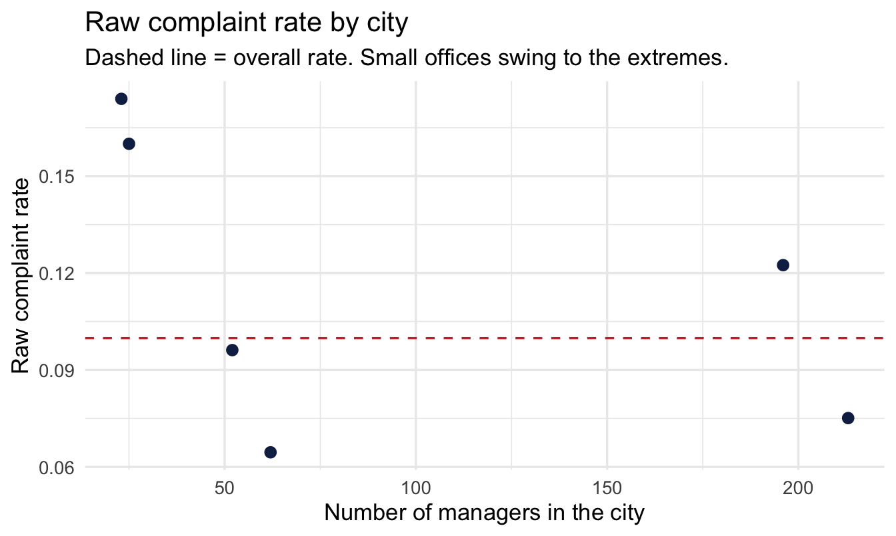
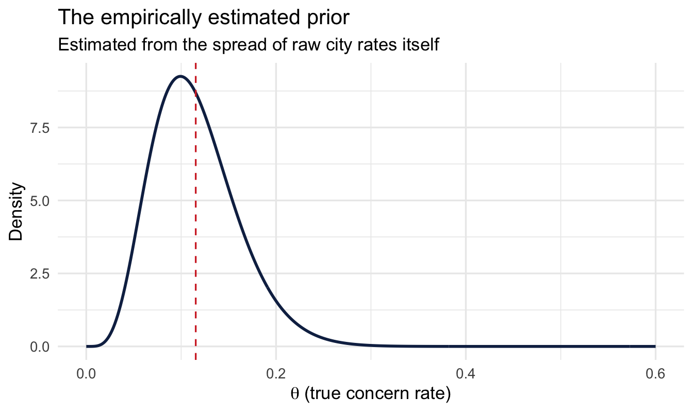
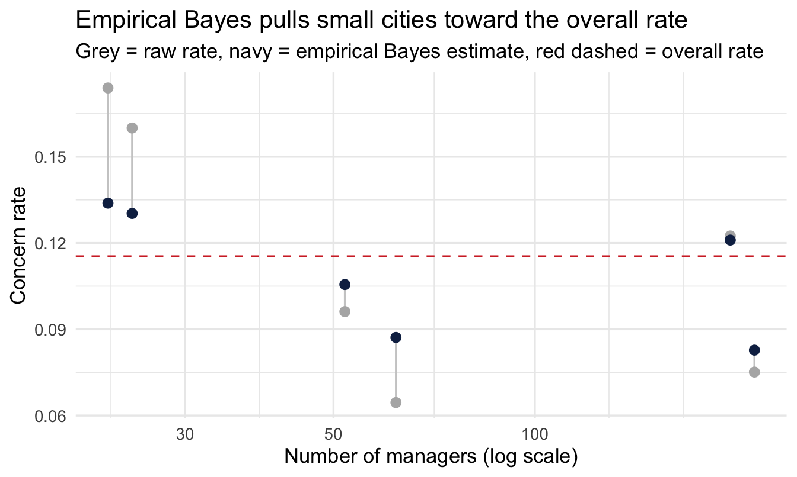
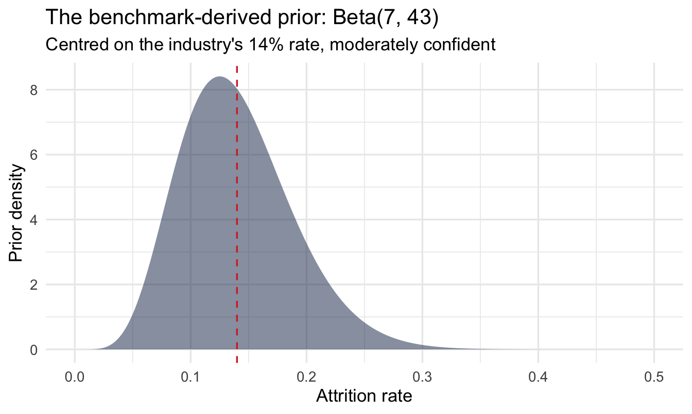
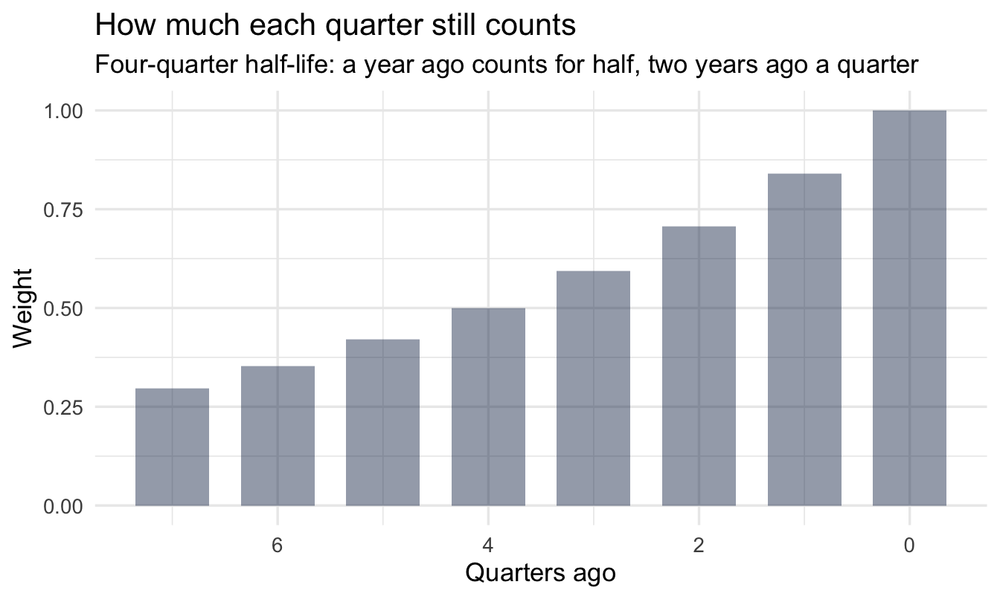
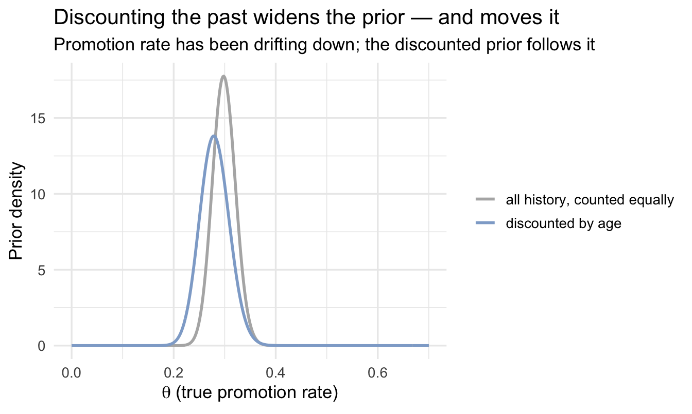

library(tidyverse)
library(peopleanalyticsdata)
library(brms)
theme_set(theme_minimal(base_size = 13))
set.seed(2026)
data("managers", package = "peopleanalyticsdata")
# Guard against missing values before grouping and estimating rates
# (Chapter 1 found gaps in a similar teaching dataset).
managers <- managers |> drop_na(concern_flag, city, high_hours_flag)14 Empirical Bayes: Estimating Rates You Don’t Have Enough Data For
Welcome
Every People Analytics team eventually hits the same wall: you want to compare a rate across a set of groups — offices, cohorts, teams, recruiting channels — and some of those groups are tiny. A city office with four managers, a recruiting channel that hired six people last quarter, a team of three. The raw rate for a small group swings wildly on almost no evidence, and yet it’s often the extreme small groups that get the attention: the “worst” office, the “best” channel.
This chapter introduces empirical Bayes — a fast, elegant way to stabilise exactly these estimates, without needing to fit a full Bayesian model. It’s the technique behind a genuinely famous piece of applied statistics (estimating true batting averages in baseball from a single season), and it maps almost exactly onto People Analytics problems.
Important
The core idea in one sentence: use the data itself to work out how much you should trust any one group’s raw number, then pull the noisiest estimates back toward the average by exactly that much.
Analysis strategy
What we have. Complaint counts and headcounts for six cities, some with a handful of managers and some with dozens. Six groups is not many, and the chapter is candid about what that costs.
What would answer the question. Each city’s underlying complaint rate, shrunk toward the overall rate by an amount the evidence justifies — and, more importantly for the decision, an honest answer to whether the cities can be told apart at all.
What could go wrong. The raw table is dangerous in a specific and predictable direction: the extremes will be the small cities, for arithmetic reasons, and acting on the top and bottom of that list mostly means acting on where you have least data. The fix has its own trap. The shortcut this chapter teaches estimates the prior from the spread of the observed rates, and that spread contains both real differences and sampling noise, so it can shrink far too little and hand the league table back with a Bayesian label on it.
So the plan. Build the prior from the data by hand, because it is one line of arithmetic and you can check it on paper. Apply it and watch the small cities move. Then check the shortcut against the estimator the literature actually uses and against a full multilevel fit of the same six cities, rather than asserting they agree.
What would make us stop. If the spread of the observed rates is not comfortably larger than the average sampling noise, the shortcut has nothing real to work with. That is a two-line check, it comes before any modelling, and on this data it is the check that changes the answer.
What you’ll be able to do by the end
- Explain why raw rates for small groups are systematically misleading
- Estimate a prior distribution from your own data (the “empirical” in empirical Bayes)
- Combine that prior with each group’s own data to get a stabilised estimate
- Know when to reach for empirical Bayes versus a full multilevel model (Chapter 15)
- Use an external benchmark as a prior when you don’t have enough of your own groups to estimate one reliably
- Build a prior from your own history, and decide how much of that history should still count
14.1 Setup
We’ll use the managers dataset: 571 managers, one row each, with a concern_flag (whether the manager has been the subject of a complaint), their city, and a handful of other characteristics. This data — and every other dataset used in Part V of this book — comes from Keith McNulty’s peopleanalyticsdata package; see the Welcome chapter for the full credit.
14.2 The problem
14.2.1 A league table of cities
Suppose you want to know: in which cities are managers more likely to have a complaint filed against them? A natural first move — group by city, compute the raw rate:
city_rates <- managers |>
mutate(concern = if_else(concern_flag == "Y", 1, 0)) |>
group_by(city) |>
summarise(
n_managers = n(),
n_concerns = sum(concern),
raw_rate = n_concerns / n_managers
) |>
arrange(desc(raw_rate))
city_rates# A tibble: 6 × 4
city n_managers n_concerns raw_rate
<fct> <int> <dbl> <dbl>
1 Orlando 23 4 0.174
2 Houston 25 4 0.16
3 New York 196 24 0.122
4 San Francisco 52 5 0.0962
5 Toronto 213 16 0.0751
6 Chicago 62 4 0.0645ggplot(city_rates, aes(x = n_managers, y = raw_rate)) +
geom_point(size = 2.5, colour = "#122a52") +
geom_hline(yintercept = mean(city_rates$n_concerns) / mean(city_rates$n_managers),
linetype = "dashed", colour = "#d32f2f") +
labs(
title = "Raw complaint rate by city",
subtitle = "Dashed line = overall rate. Small offices swing to the extremes.",
x = "Number of managers in the city", y = "Raw complaint rate"
)
14.2.2 Why this table is dangerous to publish as-is
Look at where the highest and lowest rates sit: overwhelmingly among the cities with the fewest managers. That’s not a finding about those cities — it’s arithmetic. With four managers, the only possible rates are 0%, 25%, 50%, 75% or 100%. A single complaint moves a small city from “fine” to “an outlier” instantly. A city with sixty managers barely moves at all for the same one complaint.
Important
If you rank cities by raw rate and act on the top and bottom of that list, you are — mostly — ranking cities by how little data you have on them, not by anything real about how they’re managed.
This is exactly the same problem the multilevel-models chapter raised for guest satisfaction and, in Chapter 15, for individual managers. It shows up everywhere in People Analytics because organisational units are almost never equally sized.
14.3 The empirical Bayes idea
14.3.1 Start from Bayes’ theorem, as before
For any one city, if we treat each manager as a coin flip with an unknown “true” concern rate \theta, Bayes’ theorem says:
\text{posterior rate} \propto \text{prior} \times \text{likelihood (the city's own data)}
The Beta-Binomial model from Chapter 4 gives us a clean way to do this: if the prior is \text{Beta}(\alpha, \beta) and a city has n managers with k concerns, the posterior is \text{Beta}(\alpha + k, \beta + n - k), and its mean is:
\hat\theta = \frac{\alpha + k}{\alpha + \beta + n}
Read that formula carefully: \alpha and \beta act like extra, imaginary managers added to every city — \alpha imaginary concerns and \beta imaginary clean records. A small city’s real data gets outweighed by these imaginary managers; a large city’s real data swamps them. That’s the shrinkage mechanism, in one formula.
14.3.2 The empirical Bayes shortcut
In Chapter 4 you had to choose a prior. Empirical Bayes instead asks: what single Beta distribution best describes the spread of raw rates we actually observed across all our cities? We estimate \alpha and \beta directly from the vector of city-level rates, using a simple method-of-moments fit:
mu <- mean(city_rates$raw_rate)
var_r <- var(city_rates$raw_rate)
# Method-of-moments Beta parameters
alpha0 <- mu * ((mu * (1 - mu) / var_r) - 1)
beta0 <- (1 - mu) * ((mu * (1 - mu) / var_r) - 1)
tibble(alpha0, beta0)# A tibble: 1 × 2
alpha0 beta0
<dbl> <dbl>
1 5.74 44.1tibble(theta = seq(0, 0.6, length.out = 400)) |>
mutate(density = dbeta(theta, alpha0, beta0)) |>
ggplot(aes(theta, density)) +
geom_line(colour = "#122a52", linewidth = 1) +
geom_vline(xintercept = mu, linetype = "dashed", colour = "#d32f2f") +
labs(
title = "The empirically estimated prior",
subtitle = "Estimated from the spread of raw city rates itself",
x = expression(theta~"(true concern rate)"), y = "Density"
)
NoteA different lens: frequentist statistics has a version of this too
If your background is frequentist statistics, this might feel like it comes out of nowhere — but it doesn’t. In the 1950s and 60s, Charles Stein and Willard James proved something that shocked the statistics world: if you want to estimate several unrelated quantities at once (say, the true rate for each of our cities), you get better overall accuracy by pulling every estimate a little toward the grand average — even when the quantities have nothing to do with each other. This became known as Stein’s paradox, and the James-Stein estimator is its practical form. Empirical Bayes is the natural route to the same destination from a Bayesian starting point: same shrinkage, same reasoning about small samples, arrived at via a prior instead of a minimax argument. It’s not a fringe Bayesian trick — it’s a well-established result that classical and Bayesian statistics converge on independently.
TipFor the ML/DS crowd
If you’ve ever tuned an L1 or L2 regularisation strength via cross-validation, you’ve already done something very close to this by hand. A ridge-regression penalty is mathematically equivalent to putting a Normal prior on your coefficients; the penalty strength is equivalent to that prior’s precision. Cross-validating the penalty is choosing the prior’s strength empirically by trial and error over held-out data. Empirical Bayes just estimates that strength directly from the data’s own spread, in closed form, without a validation loop. Same instinct — “let the data tell you how much to trust extreme values” — different mechanics.
(One disambiguation while we’re here: empirical Bayes has nothing to do with a “naive Bayes classifier.” They share a name and a theorem, not much else — naive Bayes is a classification algorithm that assumes feature independence; empirical Bayes is a way of estimating priors from data. Easy to conflate on a first pass.)
NoteWhy this is a slightly uncomfortable idea, and why it’s fine anyway
Using the data to build the prior and then using the same data again in the likelihood sounds circular — full Bayesians will point this out. In practice it usually works well as an approximation to a full hierarchical model, and it has one big advantage: no MCMC, answers in milliseconds. Treat it as a fast, practical tool — not a substitute for a full model when the stakes are high enough to justify one.
“Usually” is doing some work in that sentence, and rather than ask you to take it on trust we check it on this data a few pages further on — against both the textbook empirical Bayes estimator and a full multilevel fit of these same six cities. The answers turn out not to be very close, and why they aren’t is the most useful thing in the chapter.
14.3.3 Apply it to every city
city_eb <- city_rates |>
mutate(
eb_rate = (alpha0 + n_concerns) / (alpha0 + beta0 + n_managers)
) |>
arrange(desc(eb_rate))
city_eb# A tibble: 6 × 5
city n_managers n_concerns raw_rate eb_rate
<fct> <int> <dbl> <dbl> <dbl>
1 Orlando 23 4 0.174 0.134
2 Houston 25 4 0.16 0.130
3 New York 196 24 0.122 0.121
4 San Francisco 52 5 0.0962 0.106
5 Chicago 62 4 0.0645 0.0872
6 Toronto 213 16 0.0751 0.0827ggplot(city_eb, aes(x = n_managers)) +
geom_hline(yintercept = mu, linetype = "dashed", colour = "#d32f2f") +
geom_segment(aes(xend = n_managers, y = raw_rate, yend = eb_rate),
colour = "grey80") +
geom_point(aes(y = raw_rate), colour = "grey70", size = 2.5) +
geom_point(aes(y = eb_rate), colour = "#122a52", size = 2.5) +
scale_x_log10() +
labs(
title = "Empirical Bayes pulls small cities toward the overall rate",
subtitle = "Grey = raw rate, navy = empirical Bayes estimate, red dashed = overall rate",
x = "Number of managers (log scale)", y = "Concern rate"
)
Read this the same way you read the shrinkage plot in Chapter 8: small offices move a long way, large ones barely move, and nobody had to pick a threshold for “too small to trust.”
CautionTry it yourself
Recompute this with high_hours_flag instead of concern_flag. Does the ranking of cities change much once you apply empirical Bayes? Which cities were “extreme” on the raw rate but unremarkable once shrunk?
14.3.4 A check on the prior we just fitted
Method of moments is the right thing to teach: it is one line of arithmetic, it needs no sampler, and you can do it on paper. But it has a known weakness, and this data walks straight into it.
The spread of the raw rates across cities has two sources mixed together. Part of it is genuine — cities really might differ. The rest is sampling noise, and we already know from the start of this chapter that small cities produce a lot of it. Method of moments takes the observed spread at face value and treats all of it as real, so the prior it fits is wider than the true between-city spread, and it shrinks the cities less than it should.
You can see how much of the spread is noise directly. For a rate estimated from n managers, the sampling variance is about \hat p(1-\hat p)/n — so average that across cities and compare it with the variance of the raw rates themselves:
- 1
- The spread of the six observed rates — what method of moments used.
- 2
- How much spread you would expect from sampling alone, even if every city had exactly the same true rate.
- 3
- What’s left over: the between-city variance the prior is supposed to describe.
# A tibble: 1 × 3
observed_variance sampling_variance implied_between_cities
<dbl> <dbl> <dbl>
1 0.00201 0.00252 -0.000515
Important
The leftover is negative. That is not a bug — a variance estimated as a difference can come out below zero — and it has a plain reading: the cities vary less than pure sampling noise would produce on its own. There is no between-city variation here for the prior to describe.
NoteEstimating the prior properly: marginal maximum likelihood
The textbook empirical Bayes estimator doesn’t fit the prior to the observed rates. It fits it to the observed counts, choosing the \alpha and \beta that make the counts you actually saw as likely as possible once the Beta prior and the Binomial sampling are combined — the Beta-Binomial marginal likelihood. That is what Robbins, and Efron and Morris, mean by empirical Bayes, and it is how the baseball example this chapter borrows from is actually done. Because it handles sampling and true variation separately, it does not double-count the noise.
It costs a few more lines than method of moments, and it is worth running as a check even when you report the simple version:
1neg_loglik <- function(par) {
a <- exp(par[1]); b <- exp(par[2])
-sum(lbeta(a + city_rates$n_concerns,
b + city_rates$n_managers - city_rates$n_concerns) -
lbeta(a, b))
}
2opt <- optim(c(log(alpha0), log(beta0)), neg_loglik)
alpha_mle <- exp(opt$par[1])
beta_mle <- exp(opt$par[2])
tibble(
method = c("Method of moments", "Marginal MLE"),
alpha = c(alpha0, alpha_mle),
beta = c(beta0, beta_mle),
3 strength = c(alpha0 + beta0, alpha_mle + beta_mle)
)- 1
- The Beta-Binomial log-likelihood, summed over cities. Parameters are optimised on the log scale so they can’t go negative.
- 2
- Started from the method-of-moments answer, which is what it’s for.
- 3
- \alpha + \beta is the “imaginary managers” number from the shrinkage formula — the prior’s strength.
# A tibble: 2 × 4
method alpha beta strength
<chr> <dbl> <dbl> <dbl>
1 Method of moments 5.74 44.1 49.8
2 Marginal MLE 155. 1393. 1548. city_compare <- city_eb |>
mutate(
eb_mle = (alpha_mle + n_concerns) / (alpha_mle + beta_mle + n_managers)
) |>
select(city, n_managers, raw_rate, eb_rate, eb_mle)
city_compare# A tibble: 6 × 5
city n_managers raw_rate eb_rate eb_mle
<fct> <int> <dbl> <dbl> <dbl>
1 Orlando 23 0.174 0.134 0.101
2 Houston 25 0.16 0.130 0.101
3 New York 196 0.122 0.121 0.103
4 San Francisco 52 0.0962 0.106 0.100
5 Chicago 62 0.0645 0.0872 0.0988
6 Toronto 213 0.0751 0.0827 0.0971The two answers are not close. The method-of-moments prior is worth a few dozen imaginary managers, so it nudges the cities; the marginal-MLE prior is worth well over a thousand, so it flattens them. Under the proper estimator every city lands on essentially the overall rate.
14.3.5 Does a full multilevel model agree?
This is the chapter’s own claim about itself, so it should be checked rather than asserted. Chapters 8 and 15 fit partial pooling properly, with a sampler and no shortcut. Six cities and six counts is a small job for brm() — a binomial model with one grouping term:
- 1
- On the log-odds scale, centred near a 12% rate and wide enough to cover anything from about 1% to 60%.
- 2
- A weakly informative prior on the between-city spread. With six groups this prior does real work — Chapter 8 made the same point.
Family: binomial
Links: mu = logit
Formula: n_concerns | trials(n_managers) ~ 1 + (1 | city)
Data: city_rates (Number of observations: 6)
Draws: 4 chains, each with iter = 4000; warmup = 2000; thin = 1;
total post-warmup draws = 8000
Multilevel Hyperparameters:
~city (Number of levels: 6)
Estimate Est.Error l-95% CI u-95% CI Rhat Bulk_ESS Tail_ESS
sd(Intercept) 0.24 0.20 0.01 0.77 1.00 2376 2797
Regression Coefficients:
Estimate Est.Error l-95% CI u-95% CI Rhat Bulk_ESS Tail_ESS
Intercept -2.20 0.20 -2.59 -1.80 1.00 3628 2427
Draws were sampled using sampling(NUTS). For each parameter, Bulk_ESS
and Tail_ESS are effective sample size measures, and Rhat is the potential
scale reduction factor on split chains (at convergence, Rhat = 1).- 1
-
One row per city, in the same order as
city_rates. - 2
- A binomial model predicts a count, so divide by the number of managers to get back to a rate.
# A tibble: 6 × 6
city n_managers raw_rate posterior lower upper
<fct> <int> <dbl> <dbl> <dbl> <dbl>
1 Orlando 23 0.174 0.113 0.0671 0.198
2 Houston 25 0.16 0.110 0.0650 0.190
3 New York 196 0.122 0.110 0.0784 0.152
4 San Francisco 52 0.0962 0.100 0.0589 0.152
5 Toronto 213 0.0751 0.0899 0.0572 0.123
6 Chicago 62 0.0645 0.0930 0.0491 0.135
Important
Every city’s interval overlaps every other city’s, and all of them overlap the overall rate. The multilevel model, the marginal-MLE empirical Bayes fit, and the variance arithmetic three paragraphs up all say the same thing:
On this data, no city is distinguishable from average.
That is a stronger version of the message this chapter opened with, not a weaker one. The raw league table looked like it had winners and losers. Shrinkage was supposed to soften it. What the proper estimators say is that there was never a league table here at all.
NoteSo which one should you use?
Keep method of moments for the reason it earned its place: you can do it in your head, and on data with more groups and larger ones it lands close to the proper answer. But run the check. The two disagree exactly when the between-group variation is small relative to the sampling noise — which is the situation where you were most likely to publish a league table you shouldn’t have.
Rule of thumb: if the observed spread is not comfortably larger than the average sampling variance, stop and fit the multilevel model. The shortcut is a shortcut to an answer, not a substitute for having one.
14.4 Using external benchmarks as priors
Empirical Bayes needs enough groups to estimate a sensible prior. If your organisation has five offices, estimating a Beta distribution from five raw rates is itself unreliable — you’d be building a shaky prior out of shaky ingredients.
Which is a fair thing to say to the worked example above, and you should say it: six cities is on the low side too. The chapter used them because six rates are small enough to print and check by hand, and because seeing the shrinkage formula move real numbers is worth more on a first pass than seeing it move sixty. But part of why the method-of-moments prior and the proper estimators disagreed so sharply is that six is thin evidence about a spread — the same warning Chapter 8 gave about estimating sd(Intercept) from six groups. It is also part of why this section exists.
A common, entirely legitimate alternative: build your prior from an external benchmark instead of your own groups.
NoteA worked (illustrative) example
Suppose your industry body publishes an average annual voluntary attrition rate of 14%, based on a large cross-industry survey, and you have no strong reason to think your organisation differs systematically from that average before looking at your own data. You could encode that as a prior:
# A Beta prior centred on 14%, with moderate confidence
# (equivalent to having already observed ~50 "imaginary" employees
# at that rate before seeing any of your own data)
benchmark_rate <- 0.14
prior_strength <- 50
alpha_bench <- benchmark_rate * prior_strength
beta_bench <- (1 - benchmark_rate) * prior_strength
tibble(alpha_bench, beta_bench)# A tibble: 1 × 2
alpha_bench beta_bench
<dbl> <dbl>
1 7 43Same habit as everywhere else in this book — look at it before using it:
tibble(theta = seq(0, 0.5, length.out = 400)) |>
mutate(density = dbeta(theta, alpha_bench, beta_bench)) |>
ggplot(aes(theta, density)) +
geom_area(fill = "#122a52", alpha = 0.5) +
geom_vline(xintercept = benchmark_rate, linetype = "dashed", colour = "#d32f2f") +
labs(
title = "The benchmark-derived prior: Beta(7, 43)",
subtitle = "Centred on the industry's 14% rate, moderately confident",
x = "Attrition rate", y = "Prior density"
)
Now combine it with, say, a 30-person team that has had 2 departures this year:
n_team <- 30
k_team <- 2
posterior_mean <- (alpha_bench + k_team) / (alpha_bench + beta_bench + n_team)
raw_rate_team <- k_team / n_team
tibble(raw_rate_team, posterior_mean, benchmark_rate)# A tibble: 1 × 3
raw_rate_team posterior_mean benchmark_rate
<dbl> <dbl> <dbl>
1 0.0667 0.112 0.14Notice what happened: the raw rate (6.7%) looks dramatically better than the industry benchmark, but with only 30 people that’s thin evidence — the posterior estimate sits between the raw rate and the benchmark, appropriately hedging until more of your own data arrives.
ImportantThe knob that matters:
prior_strength
prior_strength (the \alpha + \beta total) is doing all the work of saying “how much should the benchmark count for, relative to a single employee’s worth of your own data?” Setting it too high means your own data can never move the estimate; too low and the benchmark barely matters. There’s no universal right answer — state your choice explicitly and, ideally, show how sensitive the conclusion is to it (a prior sensitivity check, exactly as in Chapter 5).
14.5 Priors from your own past
So far this chapter has built a prior two ways: from the spread across your own groups, and from an external benchmark. There’s a third source sitting right there in your HRIS, and it’s usually the most persuasive one in a meeting — your own history. You have last year’s promotion rates, the last three years of attrition, eight quarters of offer acceptances. Chapter 4 showed the mechanism already: today’s posterior is tomorrow’s prior, so history rolls forward on its own.
It also came with a warning, which is what this section is about. Rolling history forward assumes the process that generated it is the same process running today. Organisations violate that assumption constantly — a reorganisation, a new promotion policy, a change of leadership, a hiring freeze. When that happens, evidence from three years ago describes a process that no longer exists, and the more of it you have the more confidently wrong it makes you.
So the question isn’t whether to use your history. It’s how much of it still counts.
14.5.1 First ask: did it change gradually, or all at once?
This is the whole decision, and it’s not a statistical one. You answer it by knowing your organisation.
Most of the changes People Analytics deals with are step changes. The reorganisation happened in March. The new promotion framework launched in Q2. The bands were rebuilt on the first of January. There is a date, people remember it, and the process genuinely is different either side of it.
ImportantWhen there’s a date, cut — don’t decay
If you can name the month it changed, the honest move is to use only the data since then, and say so in one sentence: “this uses promotions from April onward, because the framework changed in March.”
That’s defensible to anyone in the room, it needs no method, and it survives being challenged. A decay curve applied to a step change is worse on both counts — it still lets pre-change data influence the answer, and it obscures a clean editorial decision behind machinery.
The instinct to reach for the sophisticated tool is strong here, and it’s usually wrong. The crude one is more defensible.
The cost of cutting is obvious: you throw data away, and if the change was recent you may have very little left. That’s not a reason to keep the old data — it’s a reason to be honest that you’re now in a small-sample situation, which is what the rest of this chapter is for.
Gradual drift is the other case, and it’s rarer than it feels. Nothing changed on a particular Tuesday; the organisation has simply been getting steadily younger, or the labour market has been slowly loosening, and evidence from four years ago is less relevant than evidence from last quarter without there being a line to draw. That’s where decay earns its place.
14.5.2 Decay weighting, in the same closed form
The mechanic is a small extension of what you’ve already done. Instead of counting every historical observation once, count each one by a weight that falls off with age:
w = \tfrac{1}{2}^{\,\text{age} / h}
where h is a half-life — the age at which an observation counts for half of a fresh one. Then build the prior from the weighted counts rather than the raw ones.
NoteA worked (illustrative) example
Eight quarters of promotion history, oldest first — the kind of table you’d assemble from an HRIS extract:
history <- tibble(
quarter = 1:8,
eligible = c(52, 48, 61, 55, 44, 58, 50, 47),
promoted = c(19, 17, 21, 17, 12, 15, 12, 11)
) |>
mutate(quarters_ago = max(quarter) - quarter)
history# A tibble: 8 × 4
quarter eligible promoted quarters_ago
<int> <dbl> <dbl> <int>
1 1 52 19 7
2 2 48 17 6
3 3 61 21 5
4 4 55 17 4
5 5 44 12 3
6 6 58 15 2
7 7 50 12 1
8 8 47 11 0Pick a half-life and compute the weights. With a four-quarter half-life, the oldest quarter here counts for about a third of the most recent one:
1half_life <- 4
history <- history |>
mutate(weight = 0.5 ^ (quarters_ago / half_life))
history |> select(quarters_ago, eligible, promoted, weight)- 1
-
In quarters, matching the unit of
quarters_ago. This is the one genuine judgement call in the section — see the callout below.
# A tibble: 8 × 4
quarters_ago eligible promoted weight
<int> <dbl> <dbl> <dbl>
1 7 52 19 0.297
2 6 48 17 0.354
3 5 61 21 0.420
4 4 55 17 0.5
5 3 44 12 0.595
6 2 58 15 0.707
7 1 50 12 0.841
8 0 47 11 1 Code
ggplot(history, aes(x = quarters_ago, y = weight)) +
geom_col(fill = "#122a52", alpha = 0.45, width = 0.7) +
scale_x_reverse() +
labs(
title = "How much each quarter still counts",
subtitle = "Four-quarter half-life: a year ago counts for half, two years ago a quarter",
x = "Quarters ago", y = "Weight"
)
Now the prior. The Beta-Binomial update from Chapter 4 said add your successes to \alpha and your failures to \beta. Here we add the weighted successes and failures instead:
alpha_hist <- sum(history$weight * history$promoted)
beta_hist <- sum(history$weight * (history$eligible - history$promoted))
n_raw <- sum(history$eligible)
1n_eff <- alpha_hist + beta_hist
tibble(alpha_hist, beta_hist, n_raw, n_eff)- 1
-
\alpha + \beta is the prior’s strength in units of people — the same knob as
prior_strengthin the benchmark section, except here you didn’t choose it directly, the decay chose it for you.
# A tibble: 1 × 4
alpha_hist beta_hist n_raw n_eff
<dbl> <dbl> <dbl> <dbl>
1 67.8 174. 415 242.That last number is the one to report. You have 415 historical observations and roughly 242 observations’ worth of evidence, because you’ve decided the old ones count for less. Both numbers are true; only the second one is being used.
theta <- seq(0, 0.7, length.out = 400)
alpha_flat <- sum(history$promoted)
beta_flat <- sum(history$eligible - history$promoted)
tibble(
theta,
`all history, counted equally` = dbeta(theta, alpha_flat, beta_flat),
`discounted by age` = dbeta(theta, alpha_hist, beta_hist)
) |>
pivot_longer(-theta, names_to = "prior", values_to = "density") |>
ggplot(aes(theta, density, colour = prior)) +
geom_line(linewidth = 1) +
scale_colour_manual(values = c("grey70", "#8fabd0")) +
labs(
title = "Discounting the past widens the prior — and moves it",
subtitle = "Promotion rate has been drifting down; the discounted prior follows it",
x = expression(theta~"(true promotion rate)"), y = "Prior density",
colour = NULL
)
Two things happen at once there, and both are the point. The discounted prior is wider, because you’re honestly claiming less evidence than you physically hold. And it has moved, tracking the recent quarters rather than averaging across a drift. A prior that counted all eight quarters equally would be narrower and centred in the wrong place — the worst combination available.
ImportantChoosing the half-life
There is no data-driven answer, and you should be suspicious of anyone who offers you one. The half-life is a statement about your organisation: how long does it take for the way we promote people to stop resembling the way we promoted them then?
Two rules make it defensible. State it, in plain words — “evidence from two years ago counts for a quarter of evidence from this quarter” is a sentence a stakeholder can push back on, and h = 4 isn’t. And show what it costs you: refit with a half-life half as long and twice as long, and report whether the conclusion changes. If it does, that sensitivity is the finding, and the honest answer is that you don’t have enough recent data to settle the question.
Same discipline as the prior sensitivity check in Chapter 5. Same reason.
If you’re modelling rather than counting rates, the same idea arrives as a weights = argument in brm() — one weight per row, computed exactly as above. That’s the one place in this book where the brm() skeleton gains an argument, and it’s worth the exception: that single argument is where “how much should the past count?” lives.
14.5.3 Names worth knowing, and where to stop
Everything above is deliberately the cheap version. There is a substantial literature underneath it, and the useful thing at this point isn’t a worked example of each — it’s knowing what to search for when your problem outgrows a half-life:
- Power priors — the formal version of what we just did: raise the historical likelihood to a power between 0 and 1 to discount it. The literature covers how to choose that power, including letting the model estimate it.
- Change-point models — for when you’re fairly sure something shifted but can’t name the date. The model finds it, and gives you a posterior over when rather than making you pick.
- State-space and dynamic linear models — θ becomes something that moves, with its own model for how fast it’s allowed to move. The proper answer to genuine drift, and a different way of working rather than an extra argument.
- Time-varying effects in
brms—s(time)orgp(time)in a model formula, letting a rate or a coefficient bend smoothly over time without leaving tools you already know.
Note
The reason to name these without expanding them is that the hardest part of the problem is usually knowing that a solution exists and what it’s called. If you’ve read this far you can recognise the situation — your history is real but stale, and a single number for “the rate” is hiding a moving target. That recognition is most of the work. The search terms are the rest.
14.5.4 The workflow steps this chapter skips, and why
Chapter 10’s workflow assumes you fitted a model. Most of this chapter does not, and it is worth being explicit rather than leaving the gap looking like carelessness.
Empirical Bayes here is closed-form arithmetic, not sampling. There are no chains to diagnose (step 7) because nothing was sampled, and no posterior predictive check (step 8) in the usual sense because there is no generative model to simulate from — the Beta prior was estimated from the group rates by method of moments, and the update is a formula.
What replaces them is the comparison in the next section: fit the full multilevel model and check the two answers agree. That is the check. If the closed-form shortcut and the properly-fitted model disagree, the distributional assumption behind the shortcut is wrong, and you have found out in the only way available.
The steps that do still apply, and are not optional: know what you are claiming (step 2 — these are descriptions of groups, not effects of being in one), and temper the result (step 10 — a shrunk rate is still built on a raw count that may itself be noisy).
14.6 Empirical Bayes vs. a full multilevel model
| Empirical Bayes (this chapter) | Multilevel model (Ch. 8, 15) | |
|---|---|---|
| Speed | Instant, closed-form | Seconds to minutes (MCMC) |
| Uncertainty | Point estimate only, by default | Full posterior for every group |
| Assumes | A single, simple distributional shape for the prior | Whatever you specify — more flexible |
| Good for | A quick first look, dashboards, many repeated similar analyses | The version you’d defend to a sceptical stakeholder or publish |
Neither is “more correct” in every situation. A sensible default: prototype with empirical Bayes because it’s instant, then confirm the conclusion holds with a proper multilevel model before you act on it. This chapter did that on the city rates and the two did not agree; Chapter 15 runs the same play on a closely related problem, at the level of individual managers, where the group count is much larger.
On the job
ImportantWhy this matters day to day
Almost every People Analytics deliverable involves ranking or comparing groups of unequal size: offices, recruiting channels, onboarding cohorts, manager populations. Empirical Bayes is the fastest tool in this book for stopping a stakeholder from over-reacting to the office with four people and one bad month. It costs you one extra line of R and no modelling framework — there’s rarely a reason not to check a raw rate this way before it goes in a deck.
Summary
NoteToday you learned
- Raw rates for small groups are noisy in a predictable direction — they produce the most extreme values.
- Empirical Bayes estimates the prior from the spread of your own groups’ rates, then shrinks each group toward it in closed form.
- The shrinkage amount is set automatically by how much groups genuinely differ versus how much is just noise — but the method-of-moments shortcut cannot separate those two, so it routinely shrinks too little. Compare its observed spread against the average sampling variance before you trust it.
- When you don’t have enough groups of your own, an external benchmark can play the same role as the prior — with an explicit, checkable choice of how strongly to weight it.
- Your own history is the third source of a prior, and the only one that needs an expiry date. If you can name the month the process changed, cut the data there and say so. If it drifted instead, discount older observations by a stated half-life and report the effective sample size you’re left with.
- Empirical Bayes is a fast approximation to the full multilevel model in the next chapter — prototype with one, confirm with the other, and take the disagreement seriously when it comes. On the six cities here, the proper estimators say no city is distinguishable from average.
Next chapter
Bayesian shrinkage: ranking managers and teams fairly — we take this exact idea and apply it properly, with a full Bayesian model, to the question that probably brought you to this chapter: which managers are genuinely better or worse, once you account for team size?